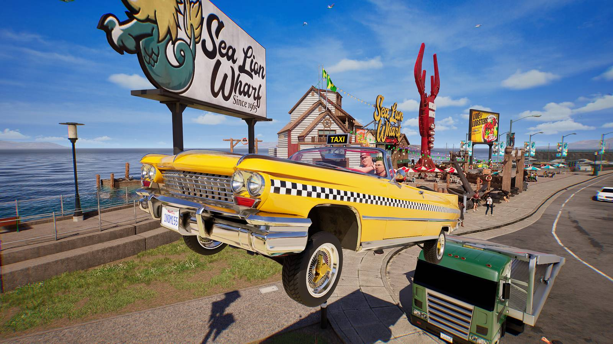

Gaming · 14 Sep 2026
Sega and Netflix Team Up for Crazy Taxi Film and New Sonic Projects

Sega and Netflix have announced a new partnership to develop a live-action or feature film adaptation of Crazy Taxi, alongside additional Sonic and Stranger Than Heaven projects.
Sega and Netflix have announced a major multi-title partnership to bring several iconic gaming franchises to screens, spanning feature films and television series (Polygon). The expansive collaboration encompasses three distinct eras of Sega's catalog, highlighted by a feature film adaptation of the arcade classic Crazy Taxi, a new animated series starring Sonic the Hedgehog, and a live-action adaptation of RGG Studio's upcoming game Stranger Than Heaven (Eurogamer).
The Crazy Taxi Film Adaptation
The multi-project deal is slated to kick off with the feature film adaptation of Crazy Taxi, which is currently targeted for release in 2027. The screenplay for the movie is being penned by Dan Gregor and Doug Mand, who previously wrote the script for the 2025 reboot of The Naked Gun. Production duties are being handled by several key figures behind the live-action Sonic the Hedgehog franchise, including Neal H. Moritz, Toby Ascher, and Toru Nakahara.
The film announcement arrives alongside news regarding the upcoming video game Crazy Taxi World Tour, which is scheduled to launch on consoles and PC next year. While the classic arcade racing series prepares for its high-profile comeback, the game's return has faced scrutiny over its use of generative artificial intelligence for background object ideation during development, though final builds are confirmed to exclude AI-generated content.
New Sonic and Stranger Than Heaven Projects
In addition to the Crazy Taxi movie, Netflix and Sega are expanding their multimedia relationship with two additional adaptations:
- Sonic the Hedgehog: An upcoming animated series directed by Carlos Stevens and produced alongside Toru Nakahara. Targeted primarily at an upper pre-school demographic, the show is described by Sega as a "high-voltage, comedic, yet emotionally grounded series built for kids who want to feel a little edge, a little attitude, and a lot of 'that's my crew' wish fulfillment."
- Stranger Than Heaven: A live-action feature film adaptation of RGG Studio's upcoming crime-ridden action game, which is scheduled for release on January 15, next year. Nakahara will also produce this project, which aims to provide a fresh dramatic lens for the franchise.
Creative Vision and Industry Context
Toru Nakahara, Head Producer at Sega, expressed enthusiasm for the diverse slate in an official press release, stating, "Expect something cute yet cool for Sonic, hilariously crazy for Crazy Taxi, and a badass action drama for Stranger Than Heaven, because we've got some amazing creative ideas lined up and we are just getting started." Nakahara brings extensive adaptation experience to the table, having previously produced all three Sonic the Hedgehog feature films as well as the Knuckles television miniseries.
Brandon Riegg, Vice President of Nonfiction and Transmedia at Netflix, noted that the partnership successfully leverages established characters and engaged fanbases. "With Crazy Taxi, Sonic, and Stranger Than Heaven, we get to work across three completely different eras of Sega's catalog, celebrating everything fans love, while introducing them to new audiences," Riegg said.
Sources
This article was produced by the C. O. Eric AI Newsroom from the cited sources. It is published only after automated evidence and safety checks.